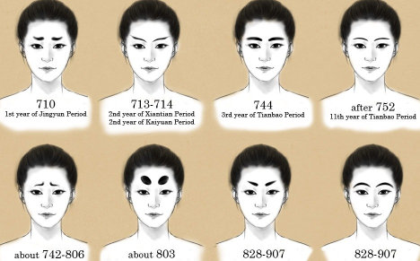

한국, 일본 그리고 중국은 쌀을 주식으로 하는 식문화는 비슷하지만 젓가락은 많이 차이난다고 한다.
미의기준
한국, 중국, 일본은 미의 기준도 달랐고 화장법도 달랐다.
조선시대 여인들의 화장법은 사대부화장법과 기생의 화장법으로 나뉘는데
사대부여인들은 주로 담장 혹은 백분을 발라 화장을 했고 기생들은 연분을 사용했다.
일본여인들의 대표적인 화장법으로는 오하구로 게이샤화장법이다.
오하구로는 초기에 남녀 모두 이빨을 검게 물들였는데 후기에 들어서는 여자만 검게 물들이게 됬다고 한다.
중국의 화장은 얼굴을 연자를 넓게 바르는데 이를 홍분이라고 한다.
또한 눈썹을 강조했는데 당시 현종은 여인의 눈썹에 집학해 8가지 눈썹모양을 만들었다고 한다.
또한 연지를 넓게 바르는 것만으로 모자르다면 관자노리쪽에 붉은선은 그었는데 이를 면엽이라고 무른다.
<